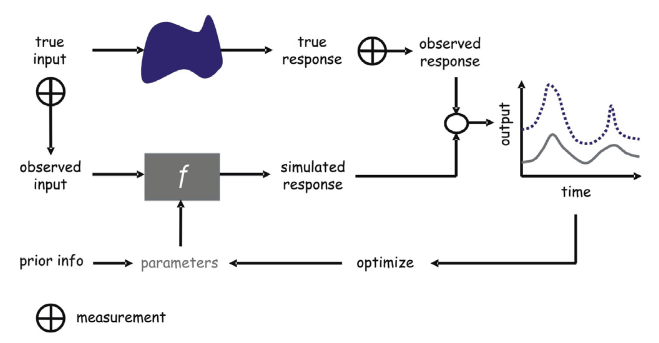
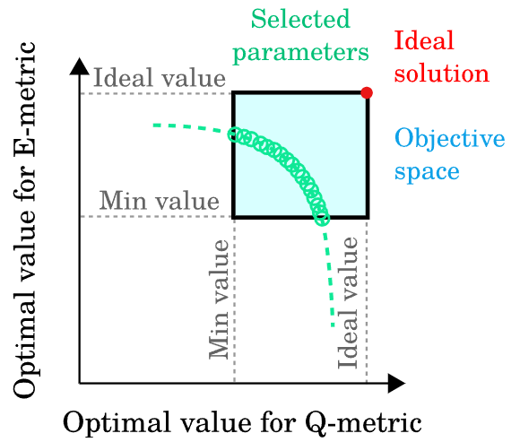
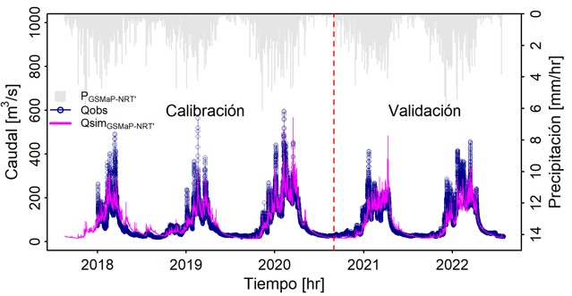

![]()
Models aim to represent hydrological systems using different kinds of mathematical simplifications (e.g. physical-based, conceptual, empirical) or spatial discretization approaches (distributed, semi-distributed, lumped). These models are capable of anticipating system response (e.g. in terms of water discharges) from forcing changes (e.g. precipitation). However, system uncertainties are implicit in the model from different sources such as: model forcings (u), parameters (θ), states (X), structure (M), or outputs (Y); as described by Liu & Gupta (2011). What is more, model errors (\(\varepsilon\)) directly impact streamflow simulation due to propagation throw the model system - from inputs to outputs - as is shown in the following equation, where t is the time:
\[
Y_{t} = M(u_{t},X_{t-1},θ, \varepsilon)
\]
In that context, model calibration techniques help to reduce parameter uncertainties and improve the streamflow representation.
Model optimization
The main focus of the model optimization procedure is to reduce errors between observed and simulated responses of the hydrological system throw parameter modification as described by Vrugt et al. (2013).

This objective might be explained by a minimization problem, where the cost function J represents errors between simulations (Ysim) and observations (Yobs):
\[
minJ = \varepsilon_{(Ysim - Yobs)}
\]
The cost function is commonly named the Objective Function (OF) and J might be expressed in terms of some statistical metrics such as the Root Mean Square Error (RMSE), where n represent the length of the time series and i is the time step.
\[ minOF = minRMSE = min(\sqrt{\frac{1}{n}\sum_{i}^{n}\left ( Y_{sim,i} - Y_{obs,i} \right )^2}) \]
There are other statistical metrics used in model calibration such as the popular Nash-Sutcliffe (NSE) or the Kling and Gupta (KGE) efficiency criterion. In both cases, higher values near 1 indicate a very good adjustment of simulations to observations, so the OF should be expressed as a maximization problem or a minimization problem of the negative metrics as follows:
\[
maxNSE = min(-1*NSE) = min(\frac{\sum_{i=1}^{n}(Y_{sim,i}-Y_{obs,i})^2}{\sum_{i=1}^{n}(Y_{obs,i}-\bar{Y_{obs}})^2})
\]
\[ maxKGE = min(-1*KGE) = min(\sqrt{(r-1)^2+(\frac{\sigma _{sim}}{\sigma _{obs}}-1)^2+(\frac{\mu _{sim}}{\mu _{obs}}-1)^2}) \]
Statistical metrics help to quantify the agreements between observed and calculated discharges. For example, Ferreira et al. (2020) evaluate 36 OF proposed in the literature and confirm that each metric should be interpreted specifically thinking about the aspects it has been proposed for (e.g. such as for low-flows, high-flows, etc). Also, a set of goodness-of-fit functions for comparison of simulated and observed hydrological time series could be found in the hydroGOF R package.
Mono-objective methods solve an optimization problem with a unique objective function as shown above. Hence, they might contain more than one metric using a linear expression of metrics and weights:
\[ minOF = a*RMSE - b*NSE - c*KGE \]
Also, multi-objective optimizations have been tested in hydrological modeling calibration to include more than a unique objective function with a Pareto optimization approach. For instance, Yeste et al. (2023) compare multi- and mono-objective calibration algorithms to integrate streamflow (Q) and evaporation (E) data in hydrological modeling.

Optimization algorithms
Searching for the set of optimal model parameters might be an overwhelming task. The Shuffle Complex Evolutionary (SCE) algorithm is one of the most popular functions for mono-objective and global automatic calibration of hydrological model parameters. According to Duan et al. (1993), the SCE method is based on a synthesis of four concepts that have proved successful for global optimization: (a) combination of probabilistic and deterministic approaches; (b) clustering; (c) systematic evolution of a complex of points spanning the space, in the direction of global improvement; and (d) competitive evolution.
The following list presents some functions and packages available in the R language programming for the optimization of hydrological models:
sceua: Mono-objective calibration function using the Shuffle Complex Evolutionary (SCE) algorithm.
hydroPSO: Enhanced Particle Swarm Optimisation (PSO) algorithm.
ga: Maximization of a fitness function using Genetic Algorithms (GA).
dream: DiffeRential Evolution Adaptive Metropolis (DREAM). Efficient global MCMC even in high-dimensional spaces.
nsga2R: Multi-objective calibration with the R Based Non-dominated Sorting Genetic Algorithm II.
rmoo: Framework for multi- and many-objective optimization, which allows researchers and users versatility in parameter configuration, as well as tools for analysis, replication, and visualization of results.
caRamel: R package for optimization implementing a multiobjective evolutionary algorithm combining the MEAS algorithm and the NGSA-II algorithm.
GPareto: Multi-objective Expected Improvement and Step-wise Uncertainty Reduction sequential infill criteria.
Calibration or validation?
Hydrological models require the development of two main steps before their operation. The calibration step consists of the selection of a window period where optimal model parameters are identified throw the procedure described lines above, while the validation step is about the use of these optimal parameters set in a new non-tested time window. In that sense, the assessment of model performance - using different statistical metrics - is computed during calibration and validation periods.

The warm-up period is a previous step inside the model calibration used to reduce initial condition uncertainties. For instance, in daily models, the first-year calibration model period is discarded from the OF and statistical performance metrics to make model outputs independent from initial model states.
References
Duan, Q. Y., V. K. Gupta, and S. Sorooshian. 1993. “Shuffled Complex Evolution Approach for Effective and Efficient Global Minimization.” Journal of Optimization Theory and Applications 76 (3): 501–21. https://doi.org/10.1007/BF00939380.
Ferreira, Paloma Mara de Lima, Adriano Rolim da Paz, and Juan Martín Bravo. 2020. “Objective Functions Used as Performance Metrics for Hydrological Models: State-of-the-Art and Critical Analysis.” RBRH 25. https://doi.org/10.1590/2318-0331.252020190155.
Liu, Yuqiong, and Hoshin V. Gupta. 2007. “Uncertainty in Hydrologic Modeling: Toward an Integrated Data Assimilation Framework.” Water Resources Research 43 (7): 160. https://doi.org/10.1029/2006WR005756.
Vrugt, Jasper A., Cajo J. F. ter Braak, Cees G. H. Diks, and Gerrit Schoups. 2013. “Hydrologic Data Assimilation Using Particle Markov Chain Monte Carlo Simulation: Theory, Concepts and Applications.” Advances in Water Resources 51 (January): 457–78. https://doi.org/10.1016/j.advwatres.2012.04.002.
Yeste, Patricio, Lieke A. Melsen, Matilde García-Valdecasas Ojeda, Sonia R. Gámiz-Fortis, Yolanda Castro-Díez, and María Jesús Esteban-Parra. 2023. “A Pareto‐based Sensitivity Analysis and Multiobjective Calibration Approach for Integrating Streamflow and Evaporation Data.” Water Resources Research 59 (6). https://doi.org/10.1029/2022wr033235.
Citation
@online{llauca2023,
author = {Llauca, Harold},
title = {How to Calibrate Hydrological Models?},
date = {2023-06-12},
url = {https://hllauca.github.io/posts/2023-06-12-quarto-blogs/},
langid = {en}
}